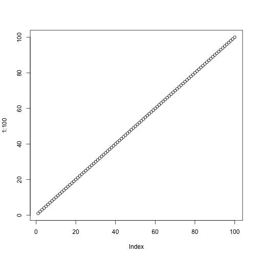

2 Chapter 1
plot(1:10)

plot of chunk unnamed-chunk-1
2.1 New section
New section. Example of an equation with matrix.
\[\begin{equation} \begin{bmatrix} y_{1} \\ y_{2} \\ y_{3} \\ y_{4} \\ y_{5} \end{bmatrix}_t = \begin{bmatrix} z_{11}&z_{12}&z_{13}\\ z_{21}&z_{22}&z_{23}\\ z_{31}&z_{32}&z_{33}\\ z_{41}&z_{42}&z_{43}\\ z_{51}&z_{52}&z_{53}\end{bmatrix} \begin{bmatrix} x_{1} \\ x_{2} \\ x_{3} \end{bmatrix}_t + \begin{bmatrix} a_1 \\ a_2 \\ a_3 \\ a_4 \\ a_5 \end{bmatrix} + \begin{bmatrix} v_{1} \\ v_{2} \\ v_{3} \\ v_{4} \\ v_{5} \end{bmatrix}_t. \tag{2.1} \end{equation}\]and the process model would look like
\[\begin{equation} \begin{bmatrix} x_{1} \\ x_{2} \\ x_{3} \end{bmatrix}_t = \begin{bmatrix} 1&0&0 \\ 0&1&0 \\ 0&0&1 \end{bmatrix} \begin{bmatrix} x_{1}\\ x_{2}\\ x_{3}\end{bmatrix}_{t-1} + \begin{bmatrix} w_{1} \\ w_{2} \\ w_{3} \end{bmatrix}_t \tag{2.2} \end{equation}\]The observation errors would be
\[\begin{equation} \begin{bmatrix} v_{1} \\ v_{2} \\ v_{3} \\ v_{4} \\ v_{5} \end{bmatrix}_t \sim \text{MVN} \begin{pmatrix} \begin{bmatrix} 0 \\ 0 \\ 0 \\ 0 \\ 0 \end{bmatrix}, \begin{bmatrix} r_{11}&r_{12}&r_{13}&r_{14}&r_{15}\\ r_{12}&r_{22}&r_{23}&r_{24}&r_{25}\\ r_{13}&r_{23}&r_{33}&r_{34}&r_{35}\\ r_{14}&r_{24}&r_{34}&r_{44}&r_{45}\\ r_{15}&r_{25}&r_{35}&r_{45}&r_{55}\end{bmatrix} \end{pmatrix} \tag{2.3} \end{equation}\]And the process errors would be
\[\begin{equation} \begin{bmatrix} w_{1} \\ w_{2} \\ w_{3} \end{bmatrix}_t \sim \text{MVN} \begin{pmatrix} \begin{bmatrix} 0 \\ 0 \\ 0 \end{bmatrix}, \begin{bmatrix} q_{11}&q_{12}&q_{13}\\ q_{12}&q_{22}&q_{23}\\ q_{13}&q_{23}&q_{33}\end{bmatrix} \end{pmatrix}. \tag{2.4} \end{equation}\]